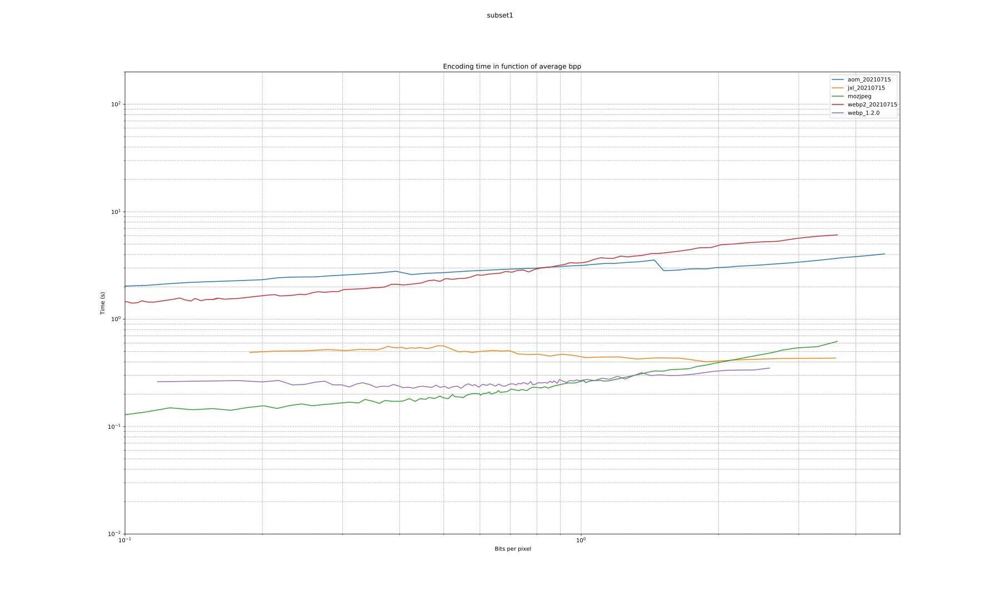

| format | avg_bpp | avg_compression_ratio | avg_space_saving | wavg_encode_time | wavg_decode_time | weissman_score |
|---|---|---|---|---|---|---|
| heif_1.12.0 | 9.931 | 1.3219 | 0.24354 | 16.09 | 5.4341 | 1.3500 |
| jxl_20210715 | 10.097 | 1.3002 | 0.23088 | 31.52 | 3.0728 | 1.2416 |
| webp2_20210715 | 10.266 | 1.2789 | 0.21807 | 27.98 | 6.3383 | 1.2354 |
| jxl_0.3.7 | 10.097 | 1.3002 | 0.23088 | 34.15 | 3.3576 | 1.2320 |
| webp_1.2.0 | 10.508 | 1.2494 | 0.19963 | 82.57 | 4.2148 | 1.0916 |
| webp2_20201204 | 10.397 | 1.2627 | 0.20805 | 93.47 | 6.5015 | 1.0912 |
| mozjpeg | 13.959 | 0.9405 | -0.06330 | 10.96 | 0.5793 | 1.0000 |
| aom_20210715 | 11.656 | 1.1263 | 0.11215 | 414.12 | 4.3691 | 0.8614 |
| aom_3.1.1 | 11.657 | 1.1262 | 0.11209 | 507.02 | 4.4280 | 0.8480 |
WARNING: Due to internal color conversion by libheif, the heif files are not true lossless.
